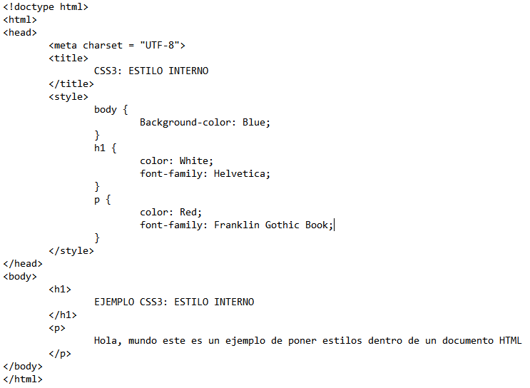
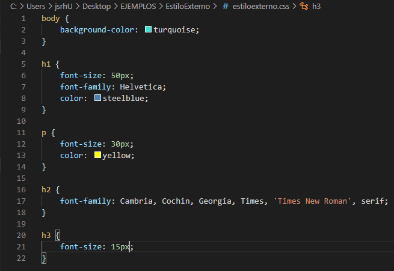
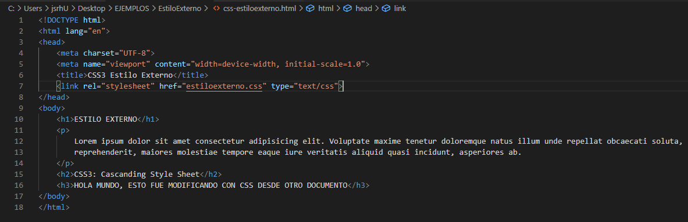
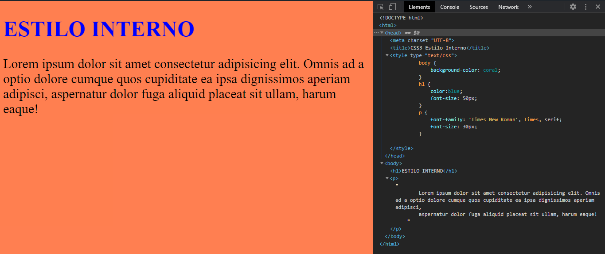

CSS3: ESTILOS EXTERNOS E INTERNOS
Según la documentación Mozilla Development, establece a CSS3 como:
CSS3 es la última evolución del lenguaje Cascading Style Sheets y tiene como objetivo extender CSS2.1. Trae una gran cantidad de novedades tan esperadas, como esquinas redondeadas, sombras, degradados, transiciones o animaciones, así como nuevos diseños como múltiples columnas, cajas flexibles o diseños de cuadrícula. Las partes experimentales tienen el prefijo del proveedor y deben evitarse en entornos de producción o usarse con extrema precaución, ya que tanto su sintaxis como su semántica pueden cambiar en el futuro.

CSS3: ESTILO INTERNO
Cuando un estilo es propio de un único documento podría utilizarse una hoja de estilos interna, mediante la creación de una sección "STYLE" dentro de la cabecera del documento. Este es el método que se ha utilizado para mostrar los ejemplos particularizados que puedes consultar en las ventanas emergentes.
Ten en cuenta que con este tipo de inclusión perdemos de vista una de las finalidades prioritarias de las hojas de estilo, ya que se mezcla en el mismo documento html las especificaciones referidas al formato con las marcas que sirven para estructurar el contenido. Sin embargo puede ser un primer paso para que compruebes la potencia de las hojas de estilo.
Ahora se presenta la siguiente imagen, en donde se puede apreciar la estructura para identificar un estilo de CSS3 dentro del documento HTML o como se le conoce, Estilo Interno:
Esto es lo que se puede apreciar a abrir el documento HTML en el navegador:

CSS3: ESTILO EXTERNO
Las hojas de estilos externas, son utilizadas para definir el estilo en varias páginas con el mismo archivo externo CSS, así es posible realizar cambios en este archivo y afectando su presentación incluso para todo el sitio web.
Para usar una hoja de estilos externa (archivo CSS), se utiliza la etiqueta "LINK" en la sección "HEAD" del documento HTML, cabe recalcar que para añadir este tipo de estilo CSS, se debe tener el documento en la misma carpeta local en donde se encuentra el documento HTML y demás elementos, como a continuación:
 Esto es lo que se puede apreciar a abrir el documento HTML en el navegador:
